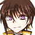
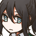
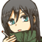
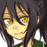

さかなのキャラまとめです。
アイコンクリックで大きめの絵につながります。
現行PBWキャラ
- ニフタ・エオニオティア / Nifta Eoniotytha
グレムリンズ・ギフト Eno.79→オープン動作テストEno.79
メカ毒親に仕込まれたナノマシンのせいで体質とか感情とか行動を制御されている15歳。
そいつが設計したグレムリンの搭乗者となるためだけに育てられた。
人生に希望がなさすぎるため基本的に狭量で逆ギレ気味。気楽に生きてる世界の何もかもが憎い。
機械生命体のペットのフォスだけが心の癒し。

- ヨル / Yoru
Soul Drops[第六期] Eno.161
白衣を羽織った風と花の天使。
ホットパンツに黒タイツ、短めのシャツから覗くへそ、そもそも隠してない胸、
そういった諸々はとにかくさて置いて堂々と男装を名乗る。男装っつったら男装。
前世ではそもそも本当に男だったとか、とある機関で医者の皮を被った色んな意味で非合法な役職に就いていただとか、
大切な相手の死を認められずに醒めぬ夢に落ちたりなどしていただとか、
どんな事実があったとしてももはや覚えてないのでそれはそれ。今は元気。

過去のPBWとか他諸々のキャラ
- 月隠 社 / Yashiro Tsugomori
ブラッドムーンキャンペーン「クロニック・ラヴ」海卓PC1
妹を吸血鬼に殺されて高校中退して吸血鬼狩人やってる陰気な男。希死念慮を責任感で抑えながら生きてるタイプ。
曙光騎士団所属なので狩人にしては比較的マシな方だけど下っ端暮らしなのでそこそこ生活は荒れてる。
武器は薙刀とナイフ、先輩兼師匠は女子小学生。
リプレイページはこちら、もろもろ個人のまとめはこちら。
- ガーデン・ハックルベリー / Garden Huckleberry
しんわーすテスト Eno.42
のんびりゆるっとエンジョイ勢フェアリー。
ガワの性別も中身の性別も不詳。使ってるアバターは一応女性だけど中性的に改造してる。
なるべくパーティプレイを避けてきたので突然ネトゲの中に閉じ込められてだいぶ困っていた。
基本的に強く殴って敵を倒せばいいとしか考えていない脳筋。
- 
- フレデリック・ナイトレイ / Frederick Knightley
Celestial Call Eno.5294 / 言の葉の樹の下で たぶんEno.5 / 騒乱茨街[テストプレイ]Eno.1453
フレッド。泣き黒子の青年。とある都市の下層民として生まれた。
きょうだいが多く家計が苦しかった中、幾許かの金で修道院に引き取られ、修道士となるべく教育を受けた。
その途中に起きたとある事件が切っ掛けである人物に従騎士として取り立てられ、仕事を任される羽目になる。
最終的にはその任からも解放され、宙ぶらりんになったところを”塔”の噂を聞きつけティブロス・セキュアルを訪れた。
コトシタではなんかよくわからないけど魔法少女の姿になってフォリウムに迷い込んだ。
イバラシティではアンジニティからの刺客、の筈だが侵略を良しとせずイバラシティ側に立ったはいいものの
イバラシティ側での仮の姿が援交女子高生だからメチャクチャに頭を抱えている。
狂信者というほど信教への固執はなく、しかし生臭坊主というほどには軽んじていない。割とマイペース。
イバラの日記まとめはこちら。
- デリカ / Derica
言の葉の樹の下で たぶんEno.5 / 騒乱茨街[テストプレイ]Eno.1453
デリカ。フレデリカ。魔法少女。
コトシタにおけるフレッドの仮の姿。淫獣付き。
フレッドという男が正体を隠すためにデリカという女性らしく振る舞っているもの。
イバラシティにおいてはフレッドの仮の姿である小出エリカが異能を用いて魔法少女に変身したもので、
小出エリカである間は自分の正体がフレッドという男であることに対する自覚も記憶もないため、中身も普通に女の子。
そんでもって家族が残した借金と自分が大学に進学するための学費と生活費をどうにかするため援交少女。
- テルプシコラ / Terpsichore
言の葉の樹の下で たぶんEno.5 / 騒乱茨街[テストプレイ]Eno.1453 サブキャラ
フレッドが同行しているシスターの姿をしたもの。
感情を窺わせない狂信者。異端狩りの異端。荒事というか戦闘担当で、イバラでは主に戦うのはこっち。
テルプシコラの手綱を取ることがフレッドの職務の一つに含まれている。
イバラシティでの仮の姿は小出エリカに飼われている黒猫のクロ。あまり困ってない。
- 宮代 砦 / Toride Miyashiro
ブラッド・クルセイド「夜は夢を見る時間」参加PC
吸血鬼狩人をやってる半吸血鬼のホスト。過去の経緯から吸血鬼と自分に流れる血を強く憎んでいる。
半吸血鬼故老化が止まっているが、血を由来としたちょっとした幻惑の術が使えるのでそれで適当に世を渡り歩いている。
ヒモもやってて女の家に転がり込んで中学生の養子の面倒を見させている。
今の養子が何人目か覚えてないし自分といると吸血鬼に狙われやすくなることも承知の上でそれなりに可愛がってる。
キャラシはこちら、まとめ記事はこちら。

- サディアス・ベッドフォード / Thaddeus Bedford
Mist of War[第五期] Eno.79
タッド。傷顔、長身、無愛想、酒も煙草もやらないつまらない男。糧食の蒐集が趣味。
五年前（霧戦争四期最後）の戦いで撃墜され、自我及び記憶の大半と同乗していた相棒の命を失っている。
その相棒――『彼女』が中に宿り眠っているとして、不可解にエネルギーを出力する操縦棺に傾倒、依存していた。
女に押しかけられたりかわいい男の子と僚機を組んだり引き留められてこれ以上は次にでも切るとか言ったりしたけど
最終的になんか増援四回行って死んだ。
日記まとめはこちら。

- クロニカ・Y・ニールネイル / Cronica Y Neillnail
Seven Seas Pno.68
片角の少年。混血の一族”ニールネイル”に生まれたY。
長くニールネイルの郷で暮らしていたが出奔、逃亡の後、血と金の提供を受ける契約のもとにテリメインを訪れる。
総じて自我が薄く、言動も記憶も曖昧で頼りない癖に図々しい。
ダークエルフ、鬼、サキュバスの血が多く顕出していると見られる。
生きるための糧として精の代わりに、人間か、人間に近い生き物の血を求めている。
日記まとめはこちら。

- エイニ・N・ニールネイル / Eini N Neillnail
Seven Seas Pno.68 サブキャラ
狼の獣人めいた外見の青年。混血の一族”ニールネイル”の出身、”同族狩り”の狩人。
逃亡した”Y”であるところのクロニカを連れ戻すべくテリメインを訪れた。
バジリスク由来の鱗が左半身に見え隠れする他、
僅かな時間であるものの相手の動きを止めることのできる魔眼という形でもその特徴を受け継いでいる。
戦闘職らしく鍛えられた大柄の持ち主。本来の獲物はハルバード。


- モニカ・フランクリン / Monica Franklin
Mist of War[第四期] Eno.206
兄を追いかけてハイドラライダーとなった少女。
ジャンク街の生まれ。屑のような継父との二人暮らしだったが、出奔して残像領域を訪れる。
150cm半ばの低身長の割にバストの大きい、いわゆるトランジスタグラマーだが色気が全くなく、
本人も性を意識されるような格好を好まない。
泣き虫のくせに跳ねっ返りで猪突猛進、その割どこか冷めた見方も持ち合わせた17歳。
機械いじりが得意で家事能力もそれなり。


- ロニー・フランクリン/ Ronnie Franklin
Mist of War[第四期] Eno.206 サブキャラ
モニカの兄。
大柄だが優しい気性の持ち主で、穏やかで明るく人好きのする性格。
尊敬してやまない兄貴分をあてに、莫大な報酬が望めるというハイドラライダーとなったが、
得られた利益の殆どはモニカらの生活費として送っていた。
早く生活を安定させてモニカを呼び寄せたいと考えていたが……。

- シュテファン / Stefan
Last Order Eno.171 他GrandBlaze Eno.582 タワムレガキ[第一期][第二期]など
冒険者として旅をするエルフの少年。長命のエルフとて長く生きればもう少し青年らしい外見になっているはずなのだが、
彼の場合は少年期にかけられた呪いによってその成長を止めている。旅の目的の一つもその呪いを解呪すること。
呪いは他にも魔力の使用の制限、一部を除いた五感の鈍化など多岐に渡り、
夥しい数と種類の重ね掛けを受けているが少しずつ解呪は進んでいる。
そういった諸々の事情はさて置いて本人は割と元気に旅を楽しんでいる。おきらくごきらく。超前向き。誇り高きエルフ。
Last Orderでの探索においては依頼主の意向で一風変わった装いをしている。普段は割とこんな格好。
- 
- シャイン・カートライト / Shine Cartwright
BLACK TEA CONQUEST[第二期] Eno.153
とある世界の軍人。被差別階級の出身。
へらへらと軽薄に笑い、無駄によく喋る。人懐こそうに口ばかり回るがその本性は、
忠誠を誓い、命を預ける相手を渡り歩く、”誰かのためにしか生きられない”奴隷根性の依存体質。
今の主人が身体に障害を負い、退役する結果を自分が引き起こしたことを気に病むあまり、
平行世界の同一人物を自分諸共異世界に召喚する荒行に踏み切る。
根本的に割と気が狂っている。
- 
- リー・ニコルズ / Lee Nicols
Mist of War[第三期] Eno.160
金を稼ぐためにハイドラライダーになったヘビースモーカーの青年。
少年のような顔立ちに薄い体格をしているが本人曰く既に二十歳を超えている。
スラムの生まれで幼い頃に人買いに売られた妹を探しており、その為の資金稼ぎが主な目的。
なるべく悟られないようにしているが右脚は義足。
味音痴で舌がバカ。総じて味の濃いものを好む。体温が低く寝付きが悪い。不健康。
日記まとめはこちら。
- 那津 / Natsu
夕闇国のコンビニ戦争 Eno.71
故郷から人探しのために出てきたら何故かコンビニ経営を任されてしまった少女。
巫女として育てられ、多少の武芸の心得もあるもののコンビニ経営に際してそれが活かされることはなかった。
「てぃーこん！」二期で投入されたシャインと那智が何かがどうかどうこうかしてどうにかなった世界線で生まれた子供。
母は自分を産んで逝去、父は物心つかない頃に出奔。半妖の養父に育てられた。
そういった諸々をあまり気にしない感じに元気にすくすく育った恋のできるガール。猫が好き。
日記まとめはこちら。
- ミスカ・リュリュコルピ / Miska Lylykorpi
百合鏡[第ニ期] Eno.51
星詠みの少年。星見の塔の幽閉から飛び出してきた。
同じく塔に一人きりで幽閉され、人との接触がなかった星詠みの巫女である母が
夢の中で出会った夢魔との間に授かった”生まれるはずのない”子供。
塔の中では本ばかり読んで暮らしていたので耳年増だったり年齢不相応に捻くれてたりするが、割と根っこは普通に子供。
でも捻くれてるのは本当だし一方でやっぱり子供相応に体力がないのでよくへばる。
- 花冠 / Kakan
Ikki Fantasy Eno.986
花冠と名乗る流れの猟師。幼き頃より山を駆り、生きるに足るだけの獲物を仕留めてきた。
雨を呼び気候を操り、大熊を相手にその喉を掻き切り殺すなど、およそ人間離れした身体能力の持ち主であったが、
メルンテーゼに於いてはその大部分を失い、多少身のこなしのきく一般人程度に留まった。
不老、殆ど不死のような体質の持ち主で、それを訝しまれるのを嫌って一処に留まることを避けていた。
とある竜の求愛を受けてからも、その生き方を大きく変えることはないように思われたが――。
前日譚となるシノビガミリプレイはこちら、日記まとめはこちら。
- 
- リーンハルト・ハイゼンベルク / Lienhard Heisenberg
Mist of War[第二期] Eno忘れた
ハルト。長い黒髪に琥珀の瞳の優男風の青年。
気のいいお節介焼きの兄貴肌といった風情だし浮名を流しなどもしていたが、
その実ウォーハイドラに死んだ恋人の名前を付けていた割とド重い男。
故郷に残した義妹は親友と暮らしているが、その親友は親友で元ハイドラライダーだし死んでいる。これが残像領域だよ。
今の霧戦争のシステムだったら間違いなく初っ端死亡許容してた。当時のシステムと相方のまーしゃるさんに感謝すべき。
- ロジェ・カートリッジ / Roger Cartlidge
精霊伝説[第四期] Eno.48
ぴかぴかした見た目の陽気元気なハーフエルフ。
と見せかけてその実超絶依存体質のドチャクソガチメンヘラのドクズ。
指輪は削る。もしくはパクる。
本当に見た目だけはやたらぴかぴかしている。よく笑うしやたら人懐こい。料理が得意。めっちゃメンヘラ。
日記まとめはこちら。
- 『背信』空花水葬
精霊伝説[第四期] Eno.48 ゲスト
『背信』。
もともとは人間だったバケモノ。バケモノとしては力の弱い方。
当たり前ながら性格が大壊滅しているがバケモノの割には穏健派。というか弱い。
趣味でバーなど経営していた。
- 『慟哭』惆悵歔欷
タワムレガキ[第三期] Eno忘れた / 精霊伝説[第四期] Eno.48 ゲスト
『慟哭』。
もともとは人間だったバケモノ。残念ながらバケモノ適性が高かった。
戦争とか虐殺とかにちょっと飽きて趣味でアサルトおじさんしてる間はかなり平和だったのでまたアサルトおじさんすべき。

- シャロン・トンプソン / Sharon Tompson
SoulDrops[第五期] Eno.218
黒衣をまとった鉄と星の天使。
天使であるのにもかかわらず翼が見られないが、これは幼い日に鉈によって切り落とされたため。
シャロンの生まれ育った村は天使を愛し、大切に養育し、
そして来るべき日に儀式としてその翼を刈り取る、ということが常態化していた。
それに関してあまり気に病んではいない。のんびり生きている。村で暮らしていた頃と同じで星を見るのが好き。

{kind=link}
{kind=link}
{kind=link}
{kind=link}
{kind=link}
{kind=link}
{kind=link}
{kind=link}
{kind=link}
{kind=link}
{kind=link}
{kind=link}
{kind=link}
{kind=link}
{kind=link}
{kind=link}
{kind=link}
{kind=link}
{kind=link}
{kind=link}
{kind=link}